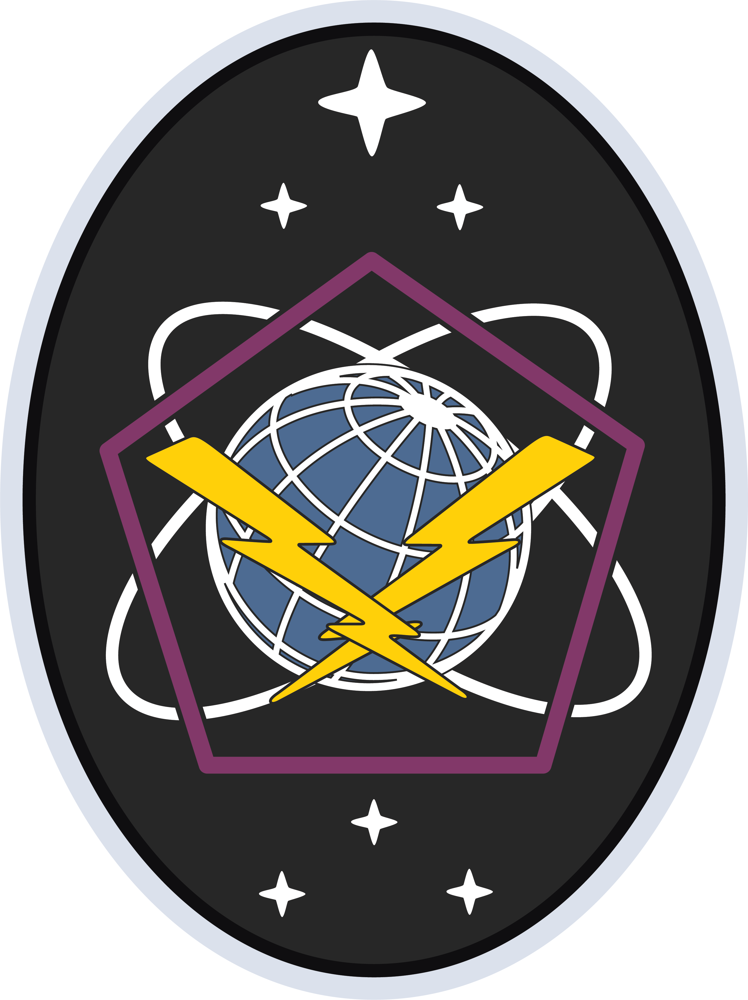
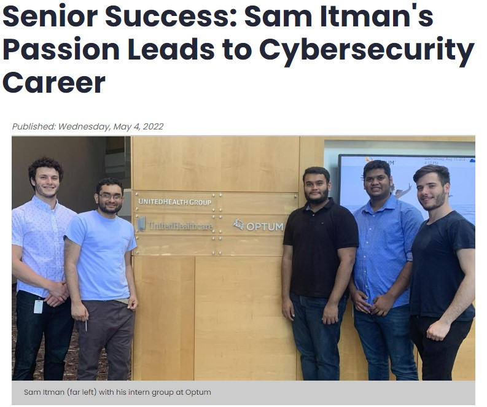
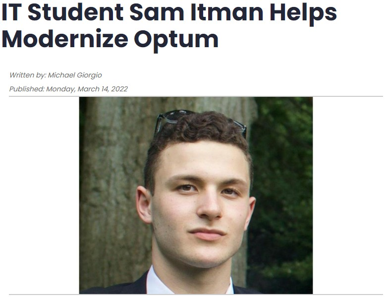

Organizations I've Worked With

I design and implement scalable solutions that improve efficiency and performance across organizations. Passionate about digital modernization, cybersecurity, and automation.

Bridging the gap between technology and mission success through innovation, leadership, and security.
Driven by a passion for digital modernization and automation, I design and implement scalable solutions that improve efficiency and performance. Skilled in DevOps, cloud computing, and enterprise app development.
Experienced in leading cross-functional teams and managing end-to-end IT initiatives. Adept at defining objectives, aligning technical strategies with business goals, and ensuring successful project execution.
Proven expertise in securing enterprise systems through cloud security, compliance enforcement, and infrastructure hardening. Background in defense and critical infrastructure sectors.
A snapshot of my professional experience, education, and technical skills.
Articles, projects, and highlights from my professional journey.

Featured student spotlight on my journey from IT student to cybersecurity professional.
Explore my repositories — from automation scripts to full-stack applications and infrastructure tools.

Coverage of my internship experience driving digital modernization at Optum / UnitedHealth Group.